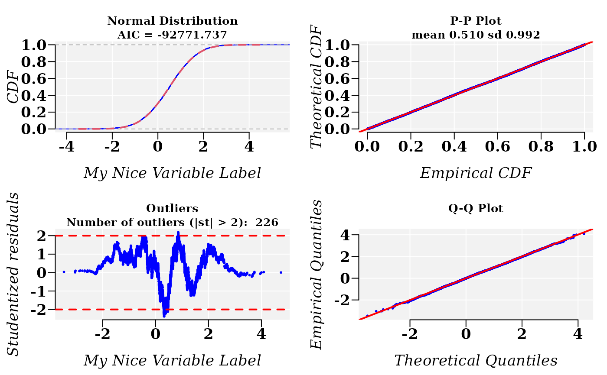
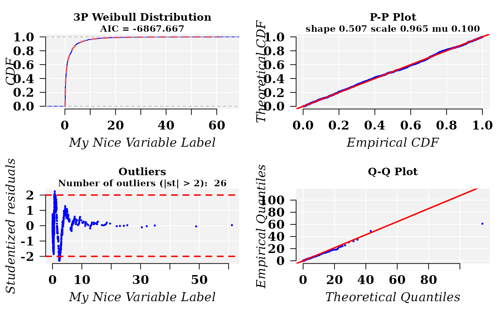

fitCDF.RdUsually the parameter estimation of a cumulative distribution function (*CDF*) are accomplished using the corresponding probability density function (*PDF*). Different optimization algorithms can be used to accomplished this task and different algorithms can yield different estimated parameters. Hence, why not try to fit the CDF directly?
fitCDF(varobj, ...)
# S4 method for numeric
fitCDF(
varobj,
distNames,
plot = FALSE,
plot.num = 1L,
distf = NULL,
start = NULL,
loss.fun = c("linear", "huber", "smooth", "cauchy", "arctg"),
min.val = NULL,
only.info = FALSE,
maxiter = 1024,
maxfev = 1e+05,
ptol = 1e-12,
nls.model = FALSE,
algorithm = "default",
xlabel = "x",
mar = c(4, 4, 3, 1),
mgp = c(2.5, 0.6, 0),
las = 1,
cex.main = 1,
cex.text = 0.8,
cex.point = 0.5,
verbose = TRUE,
...
)
# S4 method for list_OR_matrix_OR_dataframe
fitCDF(
varobj,
distNames,
plot = FALSE,
plot.num = 1,
distf = NULL,
start = NULL,
loss.fun = c("linear", "huber", "smooth", "cauchy", "arctg"),
only.info = FALSE,
maxiter = 1024,
maxfev = 1e+05,
ptol = 1e-12,
xlabel = "x",
mar = c(4, 4, 3, 1),
mgp = c(2.5, 0.6, 0),
las = 1,
cex.main = 1,
cex.text = 0.8,
cex.point = 0.5,
num.cores = 1L,
tasks = 0L,
verbose = TRUE,
...
)A a vector, a named list, a matrix or a data.frame, containing the observations from the variable for which the CDF parameters will be estimated. When the argument is a matrix or a data.frame, the columns must be named, carrying the objective variables.
(Optional) Further graphical parameters (see
par). Graphical parameter will simultaneously affect
all the plots.
a vector of distribution numbers to select from the listed below in details section, e.g. c(1:10, 15). If 'distNames' is not any of current 20 named distributions, then it can be any arbitrary character string, but the argument 'distf' must be given (see below).
Logical. Default FALSE Whether to produce the plots for the best fitted CDF.
The number of distributions to be plotted.
A character string naming a cumulative distribution function(s) (CDF) present in the R session environment . For example, gamma or norm, etc, from where, internally, we can get: density, distribution function, quantile function and random generation as: dnorm, pnorm, qnorm, and rnorm, respectively. If the function is not present in the environment, then an error will be returned. It must given only if 'distNames' is not any of current 20 named distributions (see details below). Default is NULL.
A named numerical vector giving the parameters to be optimized with initial values or a list of numerical vectors (only when varobj is a list, a matrix or a data.frame). This can be omitted for some of the named distributions (see Details). This argument will be used if provided for only one distribution. The default parameter values are:
norm = c( mean = MEAN, sd = SD )
lnorm = c(meanlog = mean( log1p(X), na.rm = TRUE), sdlog = sd( log1p( X ), na.rm = TRUE))
hnorm = c(theta = sqrt(pi)/(SD*sqrt(2)))
gnorm = c( mean = MEAN, sigma = SD, beta = 2)
tgnorm = c( mean = MEAN, sigma = SD, beta = 2)
laplace = c( mean = MEAN, sigma = sqrt( VAR))
gamma = c(shape_scale(X, gg = FALSE))
gamma3p = c(shape_scale(X, gg = FALSE), mu = 0),
ggamma = c(shape_scale(X, gg = TRUE), mu = MIN, psi = 1)
ggamma = c(shape_scale(X, gg = TRUE), psi = 1)
weibull = c( shape = log( 2 ), scale = Q)
weibull3p = c( mu = MIN, shape = log( 2 ), scale = Q)
beta = c(shape1 = 1, shape2 = 2)
beta3 = c(shape1 = 1, shape2 = 2, a = MIN)
beta4 = c(shape1 = 2, shape2 = 3, a=0.9 * MIN, b=1.1 * MAX)
bweibull = c(alpha=1, beta=2, shape = log( 2 ), scale = Q)
gbeta = c( shape1 = 1, shape2 = 2, lambda = 1)
rayleigh = c( sigma = SD )
exp = c( rate = 1)
exp2 = c( rate = 1, mu = 0)
geom = c(prob = ifelse(MEAN > 0, 1/(1 + MEAN), 1))
lgamma = shape_scale(log1p(X), gg = FALSE)
lpgamma3p = c(shape_scale(log1p(X), gg = FALSE), mu = 0)
Loss function(s) used in the regression (see (Loss function)). After \(z = 1/2 * sum((f(x) - y)^2)\) we have:
"linear": linear function which gives a standard least squares: \(loss(z) = z\).
"huber": Huber loss, \(loss(z) = ifelse(z <= 1, z, sqrt(z) -1)\).
"smooth": Smooth approximation to the sum of residues absolute values: \(loss(z) = 2*(sqrt(z + 1) - 1)\).
"cauchy": Cauchy loss: \(loss(z) = log(z + 1)\).
"arctg": arc-tangent loss function: \(loss(x) = atan(z)\).
A number denoting the lower bound of the domain where CDF is defined. For example, for Weibull and GGamma min.val = 0.
Logic. Default TRUE. If true, only information about the parameter estimation is returned.
Parameters to control of various aspects of the
Levenberg-Marquardt algorithm through function
nls.lm.control from *minpack.lm* package.
Logical. Whether to return the best fitted model as an
object from nlsModel class. Default is FALSE. If TRUE, then
the estimated parameters are used new fitting with nls
function.
Only if nls.model = TRUE. The same as for
nls function.
(Optional) Label for variable varobj. Default is xlabel = "x".
(Optional) Graphical parameters (see
par).
Numerical value to scale text and points.
Logic. If TRUE, prints the function log to stdout
Parameters for parallel computation using package
BiocParallel-package: the number of cores to use,
i.e. at most how many child processes will be run simultaneously (see
bplapply and the number of tasks per job (only
for Linux OS).
After return the plots, a list with following values is provided:
aic: Akaike information creterion
fit: list of results of fitted distribution, with parameter values
bestfit: the best fitted distribution according to AIC
fitted: fitted values from the best fit
rstudent: studentized residuals
residuals: residuals
After cdf = fitCDF( varobj, ...), attributes( cdf$bestfit ) shows the list of objects carry on cdf$bestfit:
names: "par" "hessian" "fvec" "info" "message" "diag" "niter" "rsstrace" "deviance"
class: "nls.lm"
And fitting details can be retrieved with summary(cdf$bestfit)
The nonlinear fit (NLF) problem for CDFs is addressed with
Levenberg-Marquardt algorithm implemented in function
nls.lm from package *minpack.lm*. The Stein's rho
for adjusted R squared (rho) is applied as an estimator of the average
cross-validation predictive power [1]. This function is inspired in a script
for the function fitDistr from the package propagate
[2]. Some parts or script ideas from function
fitDistr are used, but here we to estimate CDF and
not the PDF as in the case of "fitDistr. More
informative results are given now. The studentized residuals are provided as
well. The list (so far) of possible CDFs is:
Normal (Wikipedia)
Log-normal (Wikipedia). This This function is set to fit \(log(1+x)\). Users can transform their variable by themself and then try the fitting to Normal distribution.
Half-normal (Wikipedia). An Alternatively using a scaled precision (inverse of the variance) parametrization (to avoid issues if \(\sigma\) is near zero), obtained by setting \(\theta=sqrt(\pi)/\sigma*sqrt(2)\).
Generalized Normal (Wikipedia)
T-Generalized Normal [3].
Laplace (Wikipedia)
Gamma (Wikipedia)
3P Gamma [4].
Generalized 4P Gamma [4] (Wikipedia)
Generalized 3P Gamma [4].
Weibull (Wikipedia)
3P Weibull (Wikipedia)
Beta (Wikipedia)
3P Beta (Wikipedia)
4P Beta (Wikipedia)
Beta-Weibull ReliaWiki
Generalized Beta (Wikipedia)
Rayleigh (Wikipedia)
Exponential (Wikipedia)
2P Exponential (Wikipedia)
Geometric (Wikipedia)
Log-Gamma (Mathematica)
Log-Gamma 3P (Mathematica)
Where, shape_scale function is an internal function that can be retrieve by typing: usefr:::shape_scale.
Stevens JP. Applied Multivariate Statistics for the Social Sciences. Fifth Edit. Routledge Academic; 2009.
Andrej-Nikolai Spiess (2014). propagate: Propagation of Uncertainty. R package version 1.0-4. http://CRAN.R-project.org/package=propagate
Abramowitz, M. and Stegun, I. A. (1972) Handbook of Mathematical Functions. New York: Dover. Chapter 6: Gamma and Related Functions.
Hand-book on STATISTICAL DISTRIBUTIONS for experimentalists (pag 73) by Christian Walck. Particle Physics Group Fysikum. University of Stockholm (e-mail: walck@physto.se).
fitdistr and fitMixDist and
for goodness-of-fit: mcgoftest.
set.seed(1230)
x1 <- rnorm(10000, mean = 0.5, sd = 1)
cdfp <- fitCDF(x1, distNames = "Normal", plot = FALSE)
#>
#> *** Fitting Normal distribution ...
#> .Fitting Done.
#> ** Done ***
summary(cdfp$bestfit)
#>
#> Parameters:
#> Estimate Std. Error t value Pr(>|t|)
#> mean 5.101e-01 5.063e-05 10077 <2e-16 ***
#> sd 9.915e-01 1.035e-04 9580 <2e-16 ***
#> ---
#> Signif. codes: 0 ‘***’ 0.001 ‘**’ 0.01 ‘*’ 0.05 ‘.’ 0.1 ‘ ’ 1
#>
#> Residual standard error: 3.874e-06 on 9998 degrees of freedom
#> Number of iterations to termination: 13
#> Reason for termination: Relative error in the sum of squares is at most `ftol'.
## Add some cosmetics to the plots
cdfp <- fitCDF(x1,
distNames = "Normal", xlabel = "My Nice Variable Label",
plot = T, font.lab = 3, font = 2, font.axis = 2, family = "serif",
cex.lab = 1.3, cex.axis = 1.3
)
#>
#> *** Fitting Normal distribution ...
#> .Fitting Done.
#> * Estimating Studentized residuals for Normal distribution
#> * Plots for Normal distribution...

## Fitting a Weibull distribution with 3 paramaters
x1 <- rweibull3p(1000, shape = 0.5, scale = 1, mu = 0.1)
cdfp <- fitCDF(x1,
distNames = "3P Weibull",
xlabel = "My Nice Variable Label",
plot = T, font.lab = 3, font = 2, font.axis = 2, family = "serif",
cex.lab = 1.3, cex.axis = 1.3, cex.main = 1.1,
mgp = c(2.5, 1, 0)
)
#>
#> *** Fitting 3P Weibull distribution ...
#> .Fitting Done.
#> * Estimating Studentized residuals for 3P Weibull distribution
#> * Plots for 3P Weibull distribution...
